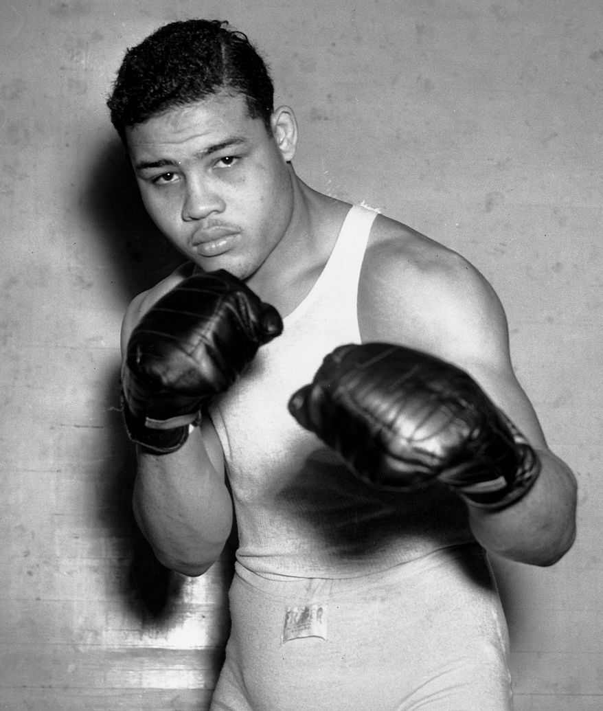

Die Herausforderungen nach dem Kampf
Boxen ist einer härtesten Profisportarten der Welt. Kaum eine Sportart verlangt vom Athleten eine intensive Kombination aus physischer Belastbarkeit, technischer Präzision und mentaler Widerstandsfähigkeit. Diese Extreme macht den Boxsport einzigartig und zugleich faszinierend.
Für viele, die sich auf den Weg einer Profikarriere begeben, steht zunächst der Traum von Ruhm und Reichtum im Vordergrund. Der Erfolg wird zum alles bestimmenden Ziel. Doch die Karriere währt nicht ewig, und ist von den Jahren her aus nur ein kleiner Abschnitt des Lebens. Was ist also, wenn die letzte Runde endet? Was geschieht danach? Das Leben nach der Karriere wird oft verdrängt, dabei ist es für viele Boxer die größte Herausforderung ihrer Laufbahn.
Jeder Boxer geht mit dem Ende seiner Laufbahn auf ganz eigene Weise um. Die Wege nach der Karriere sind so vielfältig und individuell wie die Persönlichkeiten selbst. Während sich einige zurückziehen und ein ruhiges Leben führen wollen, schlagen andere völlig neue Pfade ein. Vom Unternehmer über den Aktivisten bis hin zum Politiker. Andere jedoch haben mit den Langzeitschäden des Sportes zu leben. Es ist keine Seltenheit, dass Boxer nach ihrer Karriere abstürzen und sich in einem fortwährenden Kampf mit Drogenmissbrauch sowie und mentalen Erkrankungen wie Depressionen oder Angstzuständen befinden. In den folgenden Abschnitten stelle ich fünf außergewöhnliche Boxer vor, die auf sehr unterschiedliche Weise doch ihren Platz jenseits des Rings gefunden haben.
/mike-tyson-453c4bb94d6443f98f3e01c37e95b5ad.jpg){kind=link}
{kind=link}
{kind=link}
{kind=link}